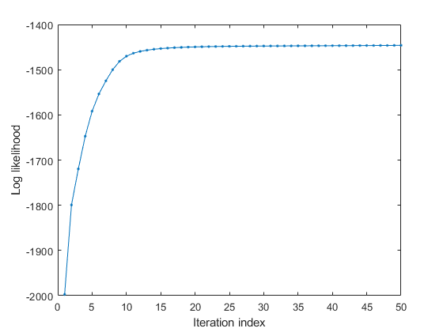

gmmTrain
GMM training for parameter identification
Contents
Syntax
- gmmModel = gmmTrain(data, gmmOpt)
- gmmModel = gmmTrain(data, gmmOpt, showPlot)
- [gmmModel, logLike] = gmmTrain(...)
- gmmOpt = gmmTrain('defaultOpt');
Description
gmmModel = gmmTrain(data, opt) performs GMM training and returns the parameters in gmmModel. I/O arguments are as follows:
- data: dim x dataNum matrix where each column is a data point
- opt: gmm options for architecture and training
- opt.arch.gaussianNum: No. of Gaussians
- opt.arch.covType: Type of covariance matrix
- opt.train.showInfo: Displaying info during training
- opt.train.useKmeans: Use k-means to find initial centers
- opt.train.maxIteration: Max. number of iterations
- opt.train.minImprove: Min. improvement over the previous iteration
- opt.train.minVariance: Min. variance for each mixture
- opt.train.usePartialVectorization specifies the use of vectorized operations, as follows:
- 0 for fully vectorized operation
- 1 (default) for partial vectorized operation (which is slower but uses less memory)
- gmmModel: The final model for GMM
[gmmModel, logLike] = gmmTrain(data, opt) also returns the log likelihood during the training process.
For demos, please refer to
- 1-d example: gmmTrainDemo1d.
- 2-d example: gmmTrainDemo2dCovType01.m, gmmTrainDemo2dCovType02.m, and gmmTrainDemo2dCovType03.
Note that opt.arch determines the architecture of GMM, which is then used to determine the initial GMM parameters by gmmInitPrmSet.m. In fact, opt.arch could be a valid GMM parameters that specify the GMM architecture directly. On the other hand, opt.train determines the parameters for training.
Example
DS=dcData(2);
trainingData=DS.input;
opt=gmmTrain('defaultOpt');
opt.arch.gaussianNum=8;
opt.arch.covType=1;
opt.train.useKmeans=0;
opt.train.showInfo=1;
opt.train.maxIteration=50;
[gmmModel, logLike]=gmmTrain(trainingData, opt, 1);
GMM iteration: 0/50, log likelihood. = -1997.223797 GMM iteration: 1/50, log likelihood. = -1799.300922 GMM iteration: 2/50, log likelihood. = -1719.550669 GMM iteration: 3/50, log likelihood. = -1647.302470 GMM iteration: 4/50, log likelihood. = -1591.922539 GMM iteration: 5/50, log likelihood. = -1553.622591 GMM iteration: 6/50, log likelihood. = -1524.830939 GMM iteration: 7/50, log likelihood. = -1499.946429 GMM iteration: 8/50, log likelihood. = -1481.403436 GMM iteration: 9/50, log likelihood. = -1470.172323 GMM iteration: 10/50, log likelihood. = -1463.621026 GMM iteration: 11/50, log likelihood. = -1459.556456 GMM iteration: 12/50, log likelihood. = -1456.812704 GMM iteration: 13/50, log likelihood. = -1454.829078 GMM iteration: 14/50, log likelihood. = -1453.337862 GMM iteration: 15/50, log likelihood. = -1452.193497 GMM iteration: 16/50, log likelihood. = -1451.303229 GMM iteration: 17/50, log likelihood. = -1450.602274 GMM iteration: 18/50, log likelihood. = -1450.043743 GMM iteration: 19/50, log likelihood. = -1449.593268 GMM iteration: 20/50, log likelihood. = -1449.225488 GMM iteration: 21/50, log likelihood. = -1448.921559 GMM iteration: 22/50, log likelihood. = -1448.667368 GMM iteration: 23/50, log likelihood. = -1448.452240 GMM iteration: 24/50, log likelihood. = -1448.268023 GMM iteration: 25/50, log likelihood. = -1448.108426 GMM iteration: 26/50, log likelihood. = -1447.968543 GMM iteration: 27/50, log likelihood. = -1447.844511 GMM iteration: 28/50, log likelihood. = -1447.733264 GMM iteration: 29/50, log likelihood. = -1447.632341 GMM iteration: 30/50, log likelihood. = -1447.539756 GMM iteration: 31/50, log likelihood. = -1447.453888 GMM iteration: 32/50, log likelihood. = -1447.373408 GMM iteration: 33/50, log likelihood. = -1447.297216 GMM iteration: 34/50, log likelihood. = -1447.224392 GMM iteration: 35/50, log likelihood. = -1447.154165 GMM iteration: 36/50, log likelihood. = -1447.085875 GMM iteration: 37/50, log likelihood. = -1447.018960 GMM iteration: 38/50, log likelihood. = -1446.952931 GMM iteration: 39/50, log likelihood. = -1446.887358 GMM iteration: 40/50, log likelihood. = -1446.821861 GMM iteration: 41/50, log likelihood. = -1446.756100 GMM iteration: 42/50, log likelihood. = -1446.689764 GMM iteration: 43/50, log likelihood. = -1446.622570 GMM iteration: 44/50, log likelihood. = -1446.554253 GMM iteration: 45/50, log likelihood. = -1446.484569 GMM iteration: 46/50, log likelihood. = -1446.413286 GMM iteration: 47/50, log likelihood. = -1446.340186 GMM iteration: 48/50, log likelihood. = -1446.265064 GMM iteration: 49/50, log likelihood. = -1446.187726 GMM total iteration count = 50, log likelihood. = -1446.107992